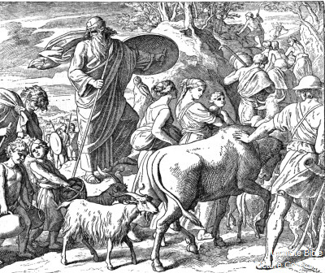
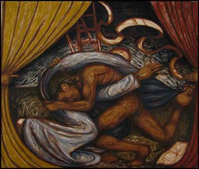

Home Quiz
Shadowland: Beginnings: Week 37
The Chase
Genesis 31:21-31:54
Despite God's obvious blessing, to the point of Jealousy, and despite
God's promise to be with him, Jacob is still scheming up his own way
of handling things. Many of us can relate. Jacob, like the Law,
is a mirror showing us what we are like. When we look in
the mirror, the mirror shows us our need to be shaved - but the mirror
cannot shave us, we are shaved by grace. (Humor by Chuck Missler)
- 31:23 From Laban's point of view, his teraphim are missing, and
Jacob is sneaking away. The chase is on.
- 31:24 As promised, God is still looking out for Jacob wherever he
goes. But why "neither good nor bad"?
- 31:43 Laban: Why should I destroy my own daughters and (former) wealth?
- 31:44 Once again, a covenant. Unlike the previous two, this one
is fairly hostile.
- 31:49 "The Lord watch between me and thee" is often used in
Christial jewelry for friends that are apart.
- 31:52 But the context is more like, "God as my witness, if you cross over
this line to my territory uninvited, you'll be sorry." Notice this is
a different spin than last weeks notes, which we didn't get to.
- 31:54 As with Abraham and Isaac with Abimelech, Jacob cuts a covenant,
offers a sacrifice, and eats a feast to celebrate the covenant.
This pattern is repeated with the Passover and the Lord's Supper.

Anticipation of the Reunion
Genesis 32
Jacob is in the path of obedience at the moment, leaving when God said
to return to Bethel - even if his departure was a little messy.
- 32:1 So God sends bands of angels to welcome Jacob home.
- 32:2 Mahanaim - hosts, plural, or two hosts. The implication is that
one band of angels protected him from Laban, while the other
was protecting him from Esau.
"Thou hast enclosed me behind and before." Psalm 139:5
- 32:4 After all the conniving to steal Isaac's blessing that God had
already promised him, and despite the visible (a few days ago anyway)
presence of God's protection, Jacob now proceeds to give it away.
Esau sold his birthright for some red stuff. Jacob gives it
away in fear, despite having been promised it while still in the
womb.
"Thy servant Jacob" - there goes "Be lord over your brothers."
- 32:5 "I've got plenty of stuff" - and I don't really need that double
portion of inheritance either.
- 32:6 Someone had tipped Esau off. I wonder who?
- 32:7 Despite having personally seen the two bands of angels sent
to protect him, Jacob is terrified and divides his company into two
bands. As Shakespeare wrote, "Conscience doth make cowards of us all."
- 32:9-12 The first recorded prayer in Scripture. Jacob calls on God, and
has a seed of faith to:
- Addresses God as the God of the Covenant
- confess his fault, and offer thanks for mercies
- supplication - deliver me
- remind God again of His promise (and how he won't have
any promised descendents if they get slaughtered).
But, notice that prayer comes only after implementing
his own scheme. How often is prayer a last resort for us?
- 32:13-21 But continues to employ his own strategy of appeasement.
All that livestock belonged to God, and Jacob is giving it
away out of fear.

- 32:22 "Jabbok" - "emptying"
- 32:24 After emptying himself of all that he had, Jacob is alone with God.
- 32:25 How often do we need to be wrestled to ground before we stop
relying on ourselves.
- 32:28 "Israel" - "prince of God", or "God reigns".
- 32:29 God changed his name, but unlike Abraham, Jacob is not called by
it until much later.
- 32:30 Jacob realizes that he had wrestled God Himself in human form.
A symbol of how Jacob had lived his life. Struggling to provide
by his own shady schemes what God had already promised.
- 32:31 Jacob now has a permanent reminder not to rely on his own devices.